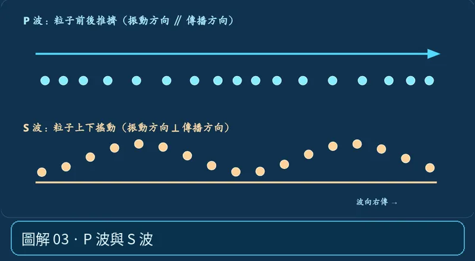

第 01 單元｜圖解 3/6｜課本 p.66–67
P 波與 S 波
P 波是沿傳播方向的壓縮波，先到且能通過固、液、氣體；S 波是垂直傳播方向的剪力波，較晚到，不能通過液體與氣體。
① 看一眼② 操作圖③ 自己推理④ 揭開解答
🔬 這張圖，請自己動手試
操作圖上方的頁籤、滑桿或按鈕；圖片也能左右滑動放大觀看。
互動圖解 · P 波與 S 波

原創 SVG 地科教學模型，方便理解，非真實比例、非即時地震資料；互動無法載入時仍有靜態圖。
STEP 01 · 先觀察
👀 眼睛先找線索
切到 P/S 波動，先盯著藍色粒子沿前進方向推擠，再比橘色粒子上下擺動。
💡 為什麼是這樣？
P 是壓縮波，粒子振動平行波的傳播方向；S 是剪力波，粒子振動垂直傳播方向。地震波把能量送出去，不是整塊岩石一路從震源移過來。
🎯 換個問法想一題
橫波 S 波是不是一定向地球右側傳？
我想好了，點開看答案 ↓
不是。「橫」描述的是粒子振動與傳播方向垂直，不是固定向左或向右。
⚡ 一句記住：兩個波，先快後慢